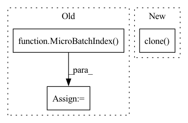

Pattern ID :29789

Before Change
ret = self.manager.recv_sample(batch_id, rank, size, outputs, counts)
if ret is not None:
reorder, inputs, outputs, counts = ret
index = MicroBatchIndex(batch_id, rank, size)
reindex_peer = self.comm.other_peers.local_reindex
request = ReindexRequest(
index, self.global_rank, reindex_peer, reorder, inputs, outputs, counts)
self.sync.upstream_queues[reindex_peer].put(request)
After Change
def handle_sample_response(self, sample_response):
batch_id = sample_response.index.batch_id
outputs = sample_response.outputs.clone()
counts = sample_response.counts.clone()
ret = self.manager.recv_sample(batch_id, outputs, counts)
inputs, outputs, counts = ret
index = MicroBatchIndex(batch_id, 0, 1)
In pattern: SUPERPATTERN
Frequency: 3
Non-data size: 3
Instances
Fragment ID: 88143200
Project Name: quiver-team/torch-quiver
Commit Name: 8098e065001f4dae290584d82bed915fbd977154
Time: 2021-10-05
Author: ee_dalong@163.com
File Name: benchmarks/ogbn_products_sage/proc.py
M Class Name: DataProcess
N Class Name: DataProcess
M Method Name: handle_sample_response(2)
N Method Name: handle_sample_response(2)
M Parent Class: QuiverProcess
N Parent Class: QuiverProcess
M File Name: benchmarks/ogbn_products_sage/proc.py
N File Name: benchmarks/ogbn_products_sage/proc.py
M Start Line: 177
M End Line: 191
N Start Line: 227
N End Line: 236
'>
Before Change
counts = sample_response.counts.clone()
ret = self.manager.recv_sample(batch_id, outputs, counts)
inputs, outputs, counts = ret
index = MicroBatchIndex(batch_id, 0, 1)
reindex_peer = self.comm.other_peers.local_reindex
request = ReindexRequest(
index, self.comm.global_rank, reindex_peer, inputs, outputs, counts)
self.sync.upstream_queues[reindex_peer].put(request)
After Change
def handle_sample_response(self, sample_response):
batch_id = sample_response.index.batch_id
nodes = sample_response.nodes.clone().to(self.manager.device)
ret = self.manager.recv_sample(
batch_id, nodes, sample_response.reindex_results)
reorder, res = self.manager.dispatch(
'>
Fragment ID: 88143205
Project Name: quiver-team/torch-quiver
Commit Name: 45c305a8da8b1ec8bead6a706f4959421780de2a
Time: 2021-10-05
Author: ee_dalong@163.com
File Name: benchmarks/ogbn_products_sage/proc.py
M Class Name: DataProcess
N Class Name: DataProcess
M Method Name: handle_sample_response(2)
N Method Name: handle_sample_response(2)
M Parent Class: QuiverProcess
N Parent Class: QuiverProcess
M File Name: benchmarks/ogbn_products_sage/proc.py
N File Name: benchmarks/ogbn_products_sage/proc.py
M Start Line: 227
M End Line: 236
N Start Line: 220
N End Line: 268
'>
Before Change
res = self.manager.prepare_request(batch_id, reorder, res, False)
global_samplers = self.comm.other_peers.global_samplers
for rank, nodes in enumerate(res):
index = MicroBatchIndex(batch_id, rank, len(res))
req = SamplerRequest(
index, self.comm.global_rank, global_samplers[rank], nodes, self.sizes[temp_layer])
self.sync.request_queues[global_samplers[rank]].put(req)
else:
After Change
def handle_reindex_response(self, reindex_response):
batch_id = reindex_response.index.batch_id
nodes = reindex_response.nodes.clone()
row = reindex_response.row.clone()
col = reindex_response.col.clone()
ret = self.manager.recv_reindex(batch_id, nodes, row, col)
nodes, temp_layer = ret
'>
Fragment ID: 88143212
Project Name: quiver-team/torch-quiver
Commit Name: 8098e065001f4dae290584d82bed915fbd977154
Time: 2021-10-05
Author: ee_dalong@163.com
File Name: benchmarks/ogbn_products_sage/proc.py
M Class Name: DataProcess
N Class Name: DataProcess
M Method Name: handle_reindex_response(2)
N Method Name: handle_reindex_response(2)
M Parent Class: QuiverProcess
N Parent Class: QuiverProcess
M File Name: benchmarks/ogbn_products_sage/proc.py
N File Name: benchmarks/ogbn_products_sage/proc.py
M Start Line: 192
M End Line: 211
N Start Line: 239
N End Line: 262